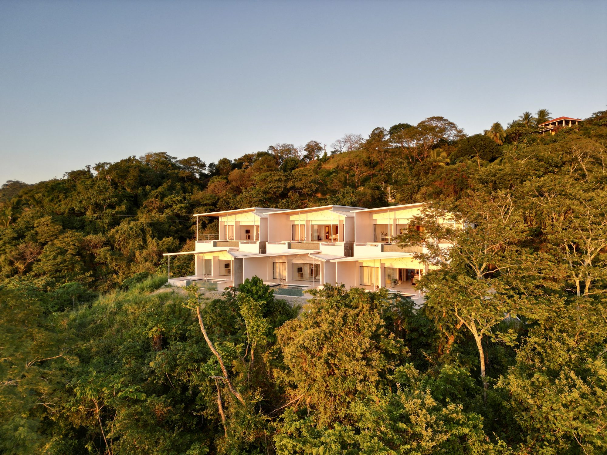
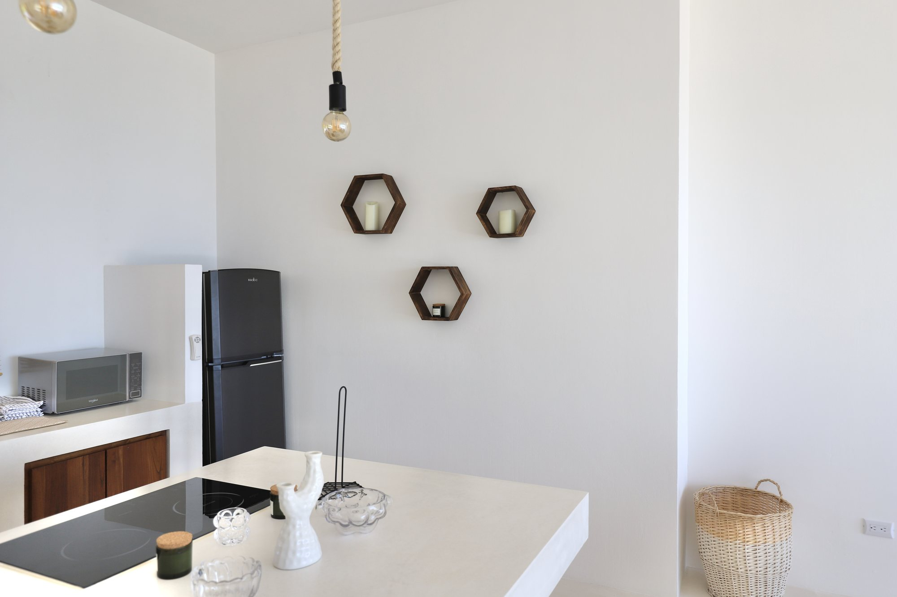
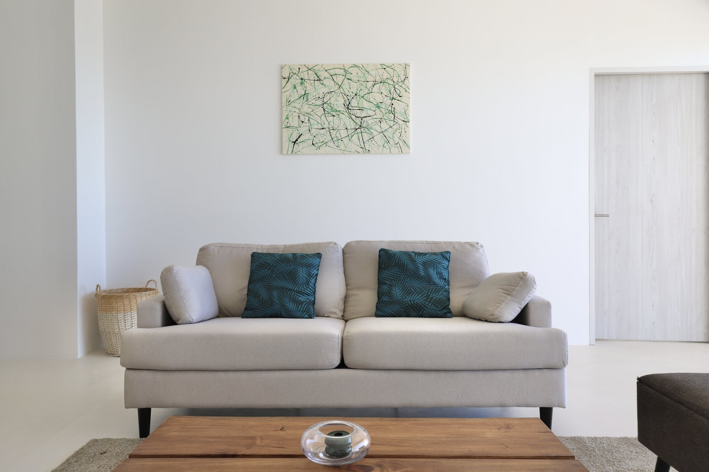

Santa Teresa has quietly become one of Costa Rica's most compelling food destinations. Beyond the surf-shop smoothie bowls, there's a thriving underground of chefs cooking with intention—importing nothing, honoring the land, feeding locals and travelers alike with the same respect. From a tiny garden-hidden gem serving Israeli couscous to a pioneering gastronomic retreat recognized by the world's best, the dining here reflects the peninsula's ethos: authentic, uncompromising, alive.
Santa Teresa's food culture exists in a beautiful tension. On one side, you have the high-tide mark of culinary sophistication—restaurants like Manzú at Nantipa Hotel, featured in The 50 Best Discovery 2024, where the chef practices regenerative agriculture and the menu reads like a conversation with the Nicoya Peninsula. On the other, you have the neighborhood sodas where locals eat gallo pinto for breakfast and casado mahi mahi for lunch, keeping things grounded at true community prices.
The thread connecting them isn't pretense. It's source. Everything here smells of the ocean or tastes of the earth. Even the most casual meal carries a kind of intention.

At Nantipa Hotel, chef-driven fine dining centered on regenerative agriculture and the Nicoya Peninsula. The signature Rondón Stew—a traditional Caribbean bouillon of coconut and fresh seafood—is the kind of dish that reminds you why geography matters in cooking. Open kitchen. Ocean-Friendly Business certified.
Bio-sourced fusion cuisine. Line-caught fish, grass-fed beef, house-baked bread. Also doubles as a gallery and bakery. DJs on rotation, dancing under the palms. Open 11am–11pm daily. Average $14 USD per entrée. driftbarcr.com
The best sushi on the peninsula. Signature Pura Vida Roll (local tuna, avocado), snapper carpaccio, grilled octopus, warm sake in a garden setting strung with hanging lights. Quiet, intimate, ingredient-focused. The place locals book for special occasions.
Hidden in a small inn on the main road. Proprietor Sandra's Israeli-Mediterranean kitchen serves slow-braised beef couscous, fresh salads, Middle Eastern spice. Garden seating with a small pool. Feels like eating at a friend's house who happens to be a chef.
Not every meal needs to be an event. Some of the most memorable eating happens between tide changes and sunsets.
The epicenter of Santa Teresa's Instagram-ready bohemia. Restored Airstream vintage trailer bar. Tropical plants, rattan lighting, acai bowls, avocado toast, breakfast burritos. Equally a hotel, café, and (excellent) surf shop. First stop for the morning crowd.
Best breakfast on the peninsula. Gaston sandwiches, croissants, pastries, strong coffee. Locals queue by 7am. It's the kind of place you go every morning of your stay, every time a different reason to come back.
Specialist in fresh ceviche and Peruvian coastal cuisine. Everything made to order daily. Outdoor patio with string lights. Open Mon–Sat 12pm–10pm. @lacevicheriast
Four-stand collective. Mexican, healthy bowls, gourmet burgers, artisanal cocktails. Low prices, high curation. Central location, walk-up order.
Authentic Costa Rican soda. Gallo pinto (rice and beans) at breakfast. Casado mahi mahi at lunch and dinner. Real community gathering spot. Prices in colones, true local rates.

The transition between day and night in Santa Teresa is sacred. Restaurants understand this.
Swings and daybeds on the sand. Specialty cocktails. The perfect perch between golden hour and evening. Live music some nights. The vibe shifts seamlessly from sunset to dance.
Seafood, cocktails, sunset views. Live music and DJs frequent. Relaxed, warm, unpretentious. The kind of place where you can watch the light change for hours.
Curated wine list, dimly lit, cultured crowd. A refuge for quieter conversation. The owner knows wine the way chefs know their ingredients.
Most restaurants don't take reservations. Plan to arrive early during peak season (Dec–April) or call ahead at your accommodation to have staff book a table. Santa Teresa dining is first-come, first-served by nature.
Dining here isn't transactional. It's relational. Chefs are visible—they talk to guests, adjust dishes, remember faces. Prices are fair because the peninsula's ethical culture keeps exploitative markup at bay. Service is warm but unhurried. There's no rush in Santa Teresa, even at dinner.
The best meal you'll have might not be at the best-reviewed spot. It might be at a sodapopular with workers on their lunch break, where the cook knows exactly how you like your plantains by the second visit.

After a day of dining your way through Santa Teresa, retreat to one of our six private villas. Each villa comes with a chef-ready kitchen, private pool, and jungle-to-ocean views. Spend the day discovering restaurants. Spend the evening in peaceful solitude.
Reserve Your Villa →